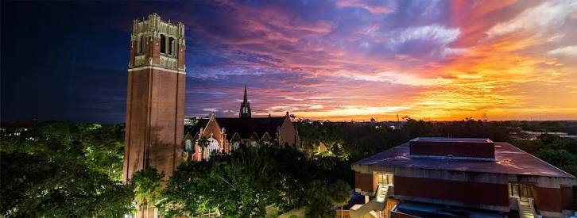
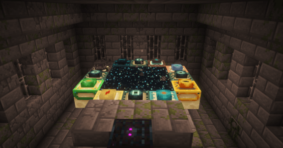
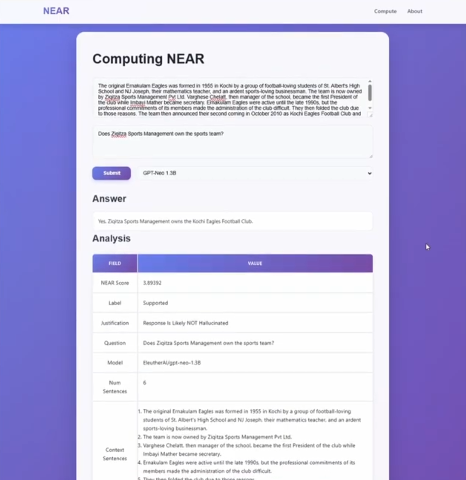

Education
- High School Diploma • Spring 2024
- Bachelor of Science in Computer Science • Spring 2026
- Bachelor of Arts in Astronomy • Spring 2026
- Master of Science in Computer Science • Spring 2027
Average GPA: 3.8

I’m a University of Florida student focused on using software, data analysis, and technical problem-solving to support meaningful work in computing, science, and space-related applications.
Average GPA: 3.8

My father and I conducted a structured mock interview so employers can review my responses to general questions.
I have a dedicated page that organizes all of my skills, and how they can be applicable to future jobs.
Designed and implemented multiple Minecraft and Geometry Dash extensions using Java/C++ and object‑oriented principles. Grew and managed an active Discord community by soliciting feedback, prioritizing requests, and rolling updates that improved stability and player experience.
Links: Modrinth • CurseForge • Spigot • Geode

Implemented a website approach to estimate whether an LLM response may be hallucinated and helped manage team coordination.

Supported students in technical coursework while helping them become more confident and independent problem-solvers.
Supported daily office operations by organizing files, maintaining accurate records, and assisting with administrative tasks, including small automations to streamline repetitive processes.
I have a dedicated page that organizes all of my work, projects, websites, school assignments, extracurriculars, and honors in one place, including a timeline view.